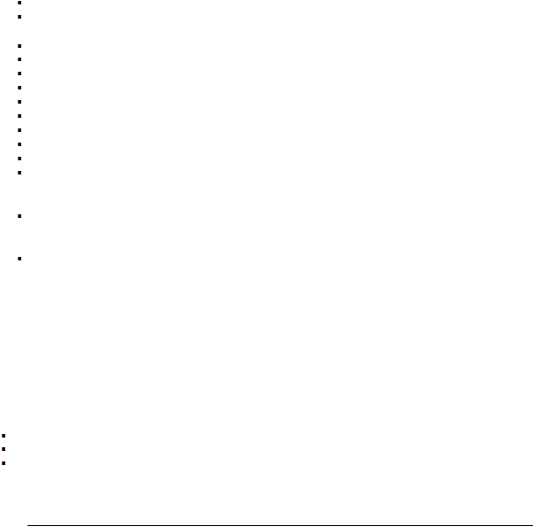

|
|
|

2011-2012 GRADUATE CATALOG
Objectives of the Program
The Five-year BS/MBA degree (Accounting Concentration) in the College of Business at Albany State University
is designed to enable students to sit for the CPA
examination and qualify as Certified Public
Accountants upon
completion of degree requirements. Students who successfully complete requirements for the 5-year MBA degree will
be awarded both a B.S. degree in Accounting and an MBA degree.
The major objective of the program is to prepare students professionally for accounting positions in business
corporations and in non-profit organizations. Professional accounting firms require internships and they prefer
graduates from 150-hour accounting programs. Also, the
program aims to prepare students for business development and ownership in accounting. By employing
contemporary technologies and innovative techniques in the program, students will develop the abilities and market-
driven traits to succeed in their business endeavors.
Thus, this program is designed to “provide an innovative
educational program to meet the needs of our diverse student population” and to “enhance the role of the University
as a leader in providing quality business education”.
Admission Requirements
Accounting students must meet the following requirements for admission to MBA:
Successfully complete all courses in areas A-F.
Successfully complete the following courses with a minimum grade of “C” in each and an overall grade point
average of 3.0:
ACCT 2101 – Principles of Accounting I
ACCT 2102 – Principles of Accounting II
ECON 2105 – Principles of Macroeconomics
ECON 2106 – Principles of Microeconomics
ECON 3205 – Economic/Business Statistics
MGMT 3105 – Legal Environment of Business
MGMT 3106 – Management Science & Operations Management
MGMT 4205 – Management Information Systems
MKTG 3120 – Principles of Marketing
Complete
ACCT
3101–Intermediate
Accounting I,
ACCT
3102–Intermediate
Accounting II, and
ACCT
3103–Intermediate III, with a grade point average of 3.0 in these three courses and a minimum grade of “C”
in each, without repeating any of these courses.
Apply during junior year (admitted after at least 90 semester hours completed) with at least 24 semester
hours completed at
Albany State University. Courses completed at
ASU must include at least 12 upper
division (3000 or 4000 level) credit hours.
Minimum composite score of 450 on the GMAT and a minimum cumulative GPA of 3.0 in all undergraduate
courses attempted.
Special Features of the Program
Students are required to take golf (2 hours) and tennis (1 hour) to satisfy the physical education component of
the university “above the core.”
The program also requires an internship during a summer term that may include
travel abroad. Students may intern with domestic or international businesses with a focus on their area of
specialization. An international internship will give opportunities to students to learn the impact of different cultures
in shaping the contemporary global community.
Students admitted to the program will be allowed to take the following graduate courses in partial fulfillment of
their undergraduate degree requirements.
ACCT 6108 – International Accounting in lieu of BUSA 4105 – International Business
MGMT 5110 – Organizational Behavior in lieu of MGMT 4110 – Organizational Behavior
MGMT 6199 – Business Policy & Strategic Mgt in lieu of MGMT 4199 – Business Policy
A
total of 151 semester hours is required for earning the BS Degree (Accounting) and the MBA
Degree
(Accounting Concentration), including 36 semester hours of graduate work as follows:
Course Numbers
Course Titles
Credit Hours
|
|
|